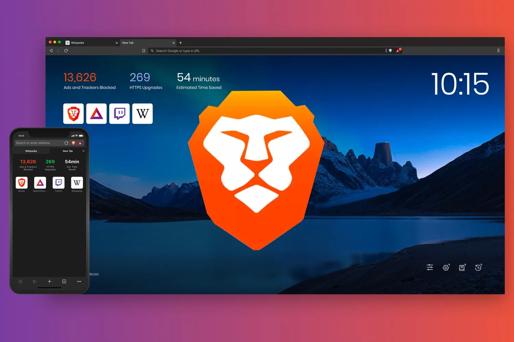

FamiSafe
Creada por la empresa: Shenzhen wondershare
Está aplicación nos permite mantener a nuestros hijos a salvo implementando el uso de inteligencias artificiales para así poder controlar el contenido visualisado por el menor.

Creada por la empresa: Shenzhen wondershare
Está aplicación nos permite mantener a nuestros hijos a salvo implementando el uso de inteligencias artificiales para así poder controlar el contenido visualisado por el menor.
Creada por: Brendan Eich y Brian Bondy
Brave Web Browser es una aplicación de navegador web rápida y segura para Android con un bloqueador de anuncios de terceros incorporado. Brave es increíblemente rápido, seguro y privado, impidiendo que los anuncios te rastreen o que tu equipo se infecte con malware y elementos emergentes.